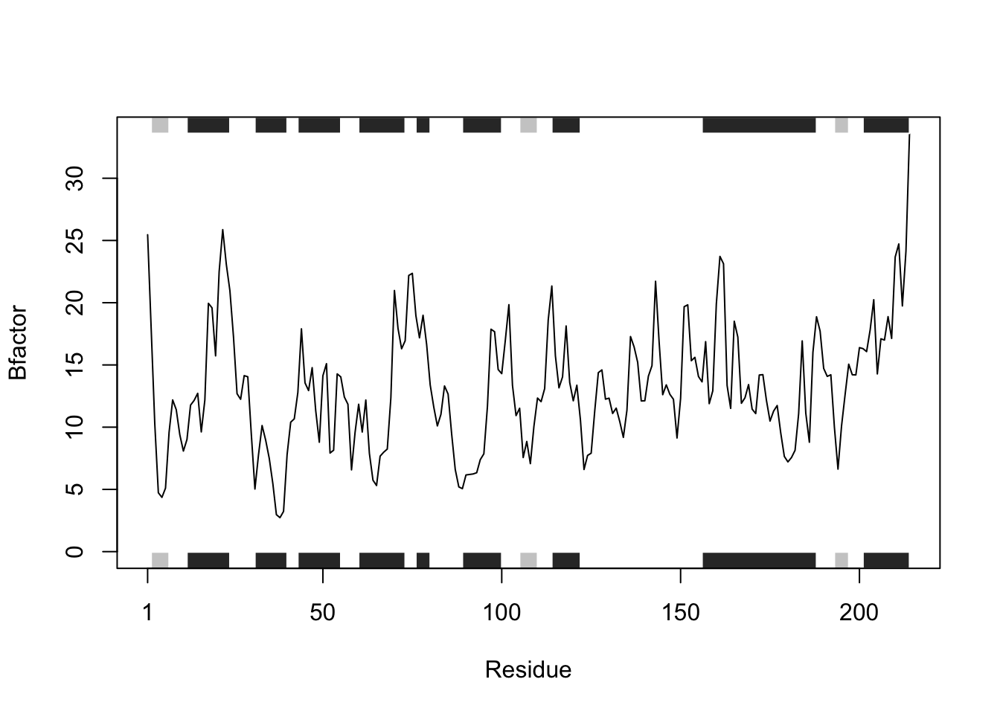

# A. Can you improve this analysis code?
df <- data.frame(a=1:10, b=seq(200,400,length=10),c=11:20,d=NA)
df$a <- (df$a - min(df$a)) / (max(df$a) - min(df$a))
df$b <- (df$b - min(df$a)) / (max(df$b) - min(df$b))
df$c <- (df$c - min(df$c)) / (max(df$c) - min(df$c))
df$d <- (df$d - min(df$d)) / (max(df$a) - min(df$d)) HW Class 6 (R Functions)
Section 1: Improving analysis code by writing functions
A. Improve this regular R code by abstracting the main activities in your own new function. Note, we will go through this example together in the formal lecture. The main steps should entail running through the code to see if it works, simplifying to a core working code snippet, reducing any calculation duplication, and finally transferring your new streamlined code into a more useful function for you.
To improve the regular R code above we can create a new function by replacing all df$ with x and using the same calculations.
abstract <- function(x) {
(x - min(x))/ (max(x)- min(x))
}
# we can now just use this function to reduce our code
abstract(df$a) [1] 0.0000000 0.1111111 0.2222222 0.3333333 0.4444444 0.5555556 0.6666667
[8] 0.7777778 0.8888889 1.0000000abstract(df$b) [1] 0.0000000 0.1111111 0.2222222 0.3333333 0.4444444 0.5555556 0.6666667
[8] 0.7777778 0.8888889 1.0000000abstract(df$c) [1] 0.0000000 0.1111111 0.2222222 0.3333333 0.4444444 0.5555556 0.6666667
[8] 0.7777778 0.8888889 1.0000000abstract(df$d) [1] NA NA NA NA NA NA NA NA NA NAB. Next improve the below example code for the analysis of protein drug interactions by abstracting the main activities in your own new function. Then answer questions 1 to 6 below. It is recommended that you start a new Project in RStudio in a new directory and then install the bio3d package noted in the R code below (N.B. you can use the command install.packages("bio3d") or the RStudio interface to do this). Then run through the code to see if it works, fix any copy/paste errors before simplifying to a core working code snippet, reducing any calculation duplication, and finally transferring it into a more useful function for you.
# Can you improve this analysis code?
library(bio3d)
s1 <- read.pdb("4AKE") # kinase with drug Note: Accessing on-line PDB files2 <- read.pdb("1AKE") # kinase no drug Note: Accessing on-line PDB file
PDB has ALT records, taking A only, rm.alt=TRUEs3 <- read.pdb("1E4Y") # kinase with drug Note: Accessing on-line PDB files1.chainA <- trim.pdb(s1, chain="A", elety="CA")
s2.chainA <- trim.pdb(s2, chain="A", elety="CA")
s3.chainA <- trim.pdb(s1, chain="A", elety="CA")
s1.b <- s1.chainA$atom$b
s2.b <- s2.chainA$atom$b
s3.b <- s3.chainA$atom$b
plotb3(s1.b, sse.border=T, sse=s1.chainA, typ="l", ylab="Bfactor")plotb3(s2.b, sse.border=F, sse=s2.chainA, typ="l", ylab="Bfactor")
plotb3(s3.b, sse.border=FALSE, sse=s3.chainA, typ="l", ylab="Bfactor")
Questions to answer:
Q1. What type of object is returned from the read.pdb() function?
read.pdb() returns a list and different components, such as a chunk of information, and even a protein sequence.
Q2. What does the trim.pdb() function do?
trim.pdb() trims the pdb file to present only the information you need.
Q3. What input parameter would turn off the marginal black and grey rectangles in the plots and what do they represent in this case?
Q4. What would be a better plot to compare across the different proteins?
Q5. Which proteins are more similar to each other in their B-factor trends. How could you quantify this? HINT: try the rbind(), dist() and hclust() functions together with a resulting dendrogram plot. Look up the documentation to see what each of these functions does.
hc <- hclust( dist( rbind(s1.b, s2.b, s3.b) ) )
plot(hc)
Q6. How would you generalize the original code above to work with any set of input protein structures?
read <- function(x) {
read.pdb(x)
}
s1 <- read("4AKE") Note: Accessing on-line PDB fileWarning in get.pdb(file, path = tempdir(), verbose = FALSE):
/var/folders/vy/y1g9fh3x6d3287mb91tjjw2m0000gn/T//RtmplR3v2Q/4AKE.pdb exists.
Skipping downloadFunction with a list of proteins, that reads, trims, and compares PDB data across the proteins to analyza the drug interactions and then plots for each specific protein.
# These are my 3 proteins as inputs
protein_list <- list("4AKE", "1AKE", "1E4Y")
# loop in function to iterate through for each protein in list.
protein_compare <- function(protein_list) {
B_factor <- data.frame()
for (l in protein_list){
s <- read.pdb(l)
# code in line below trims for specific section for protein
s.chainA <- trim.pdb(s, chain="A", elety="CA")
s.b <- s.chainA$atom$b
B_factor <- rbind(B_factor, s.b)
plotb3(s.b, sse=s.chainA, typ="l", ylab="Bfactor")
}
return(B_factor)
}
s.b_info <- protein_compare(protein_list) Note: Accessing on-line PDB fileWarning in get.pdb(file, path = tempdir(), verbose = FALSE):
/var/folders/vy/y1g9fh3x6d3287mb91tjjw2m0000gn/T//RtmplR3v2Q/4AKE.pdb exists.
Skipping download Note: Accessing on-line PDB fileWarning in get.pdb(file, path = tempdir(), verbose = FALSE):
/var/folders/vy/y1g9fh3x6d3287mb91tjjw2m0000gn/T//RtmplR3v2Q/1AKE.pdb exists.
Skipping download
PDB has ALT records, taking A only, rm.alt=TRUE Note: Accessing on-line PDB fileWarning in get.pdb(file, path = tempdir(), verbose = FALSE):
/var/folders/vy/y1g9fh3x6d3287mb91tjjw2m0000gn/T//RtmplR3v2Q/1E4Y.pdb exists.
Skipping download

hc <- hclust(dist(s.b_info))
plot(hc)